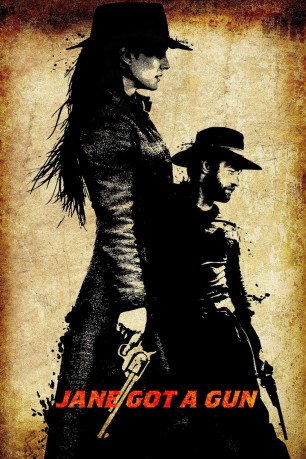
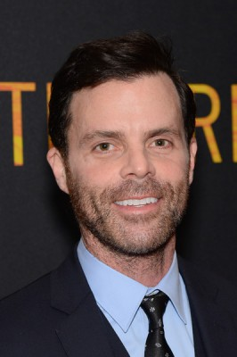

#3643 Jane Got a Gun
 
 IMDB-Wertung: 5.8 / 10
IMDB-Wertung: 5.8 / 10  Metascore: 0
Metascore: 0 
Jane (Natalie Portman) ist mit einem der übelsten Gangster der Stadt verheiratet. Als dieser sich dazu entschließt, sich gegen seine eigene Bande zu stellen, wird er schnell zum Ziel und bei einem Angriff der ehemaligen, von dem skrupellosen Colin McCann (Ewan McGregor) angeführten, Kumpanen schwer verletzt. Der Ehemann (Noah Emmerich) schafft es trotz acht Kugeln in seinem Körper, nach Hause zurückzukehren, wo er Jane warnen kann, dass seine ehemalige Bande nun nach ihm suchen wird. Jane wird klar, dass nur sie die Familie und das Grundstück noch beschützen kann und so holt sie sich Hilfe bei ihrem alten Freund Dan Frost (Joel Edgerton), einem Revolverhelden, der den Anführer der Gangster-Bande schon länger ins Auge gefasst hat. Darüber hinaus ist er heimlich in Jane verliebt und sieht so seine Chance gekommen. Jane und Dan entdecken alte Gefühle füreinander, als sie sich der Bande entgegenstellen und um ihr eigenes Überleben kämpfen.
Jahr: 2016
Dauer: 98 Minuten
FSK: 12
Land: USA Studio: Weinstein Company, TheTonspuren: DTS - ,
Untertitel: Deutsch,
Auflösung: 1080p (1920x800) Größe: 4433 MB
Genre: Action, Drama, Western
Regisseur: Gavin O'Connor
Drehbuch: Brent Bambic
Soundtrack:
Darsteller:
 Natalie Portman als Jane Hammond
Natalie Portman als Jane Hammond Joel Edgerton als Dan Frost
Joel Edgerton als Dan Frost Ewan McGregor als John Bishop
Ewan McGregor als John Bishop Noah Emmerich als Bill Hammond
Noah Emmerich als Bill Hammond Boyd Holbrook als Vic Owen
Boyd Holbrook als Vic Owen Rodrigo Santoro als Fitchum
Rodrigo Santoro als Fitchum- Sam Quinn als Slow Jeremiah
 Jenny Gabrielle als Whore
Jenny Gabrielle als Whore-  Alex Manette als Buck
 Lauren Poole als Woman #2
Lauren Poole als Woman #2- Robb Janov als Fiddler
 Nash Edgerton als Fur Trader
Nash Edgerton als Fur Trader James Blackburn als Tannery Man , uncredited
James Blackburn als Tannery Man , uncredited- Ricky Lee als Grave Digger , uncredited
- Robb Moon als Casket Maker , uncredited
 Martin Palmer als Townsmen , uncredited
Martin Palmer als Townsmen , uncredited- Giuseppe Quinn als Townsman , uncredited
- Kendra Tuthill als Wagon Woman , uncredited
- James Burnett als Cunny Charlie
- Maisie McMaster als Kate
- Piper Sheets als Mary
- Celia Kessler als Jig Girl
- Linda Martin als Madame
- Kristen Hansen als Woman #1
- James Kinsfather als Barkeep
- Chad Brummett als Theodore Ballard
- Boots Southerland als Marshall
- Victoria DeMersseman als Older Mary
- Nicoletta Chapman als Brothel Girl , uncredited
- Billy Fuessel als Town Folk / Cowboy , uncredited
- Wynema Gonzagowski als Dead Gypsy Woman , uncredited
- Sean Helean als Townsman , uncredited
- Darlene Kellum als Brothel Girl , uncredited
- Jahan Khalili als Barber , uncredited
- Rodger Larance als Bordello Patron , uncredited
 Jaime Powers als Town Photographer , uncredited
Jaime Powers als Town Photographer , uncredited- Mia Wagenman als Baby Kate , uncredited
Datei: X:\HD-Western-2000-2015\Jane Got a Gun (2016, FSK12, 1920x800).mkv seit 11.05.2016
Festplatte: HD Eastern+Western
 Es gibt insgesamt 61 Filme in der Gruppe 'HD-Western-2000-2015'
Es gibt insgesamt 61 Filme in der Gruppe 'HD-Western-2000-2015'